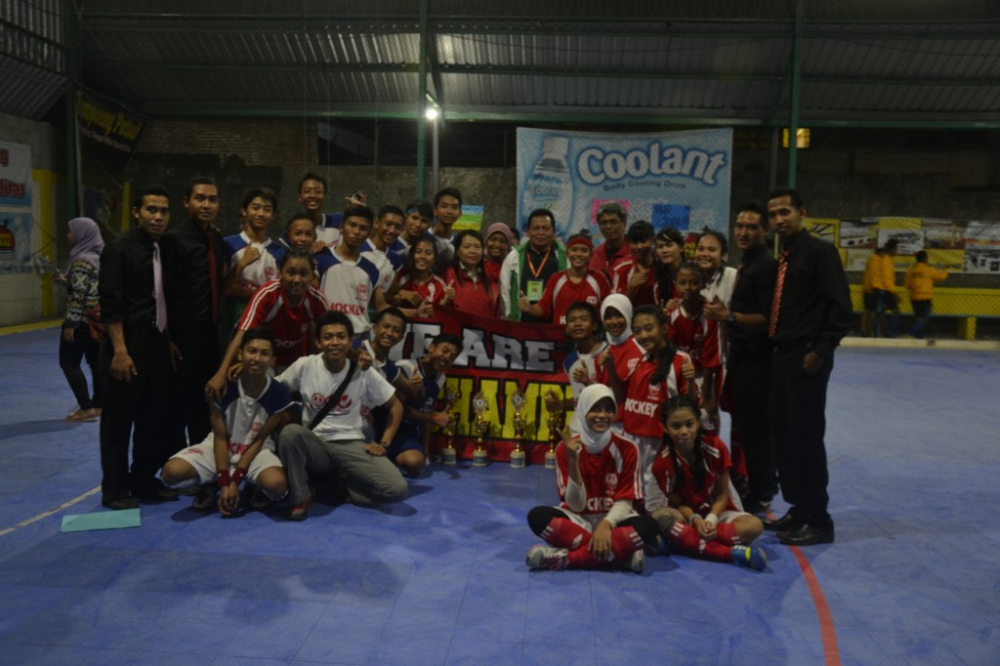
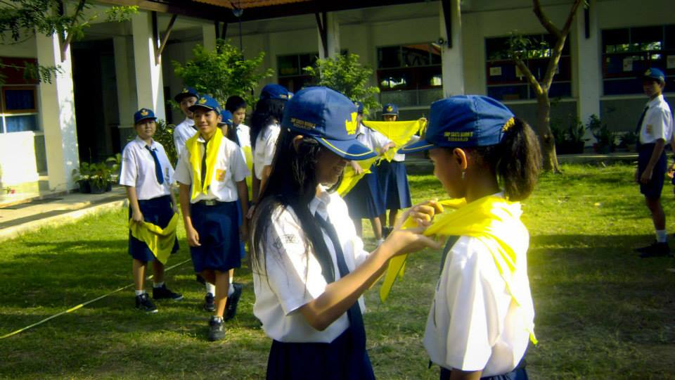

Selamat Datang dan Selamat Membaca
Tiba saatnya aku,memasuki masa SMP. Masih ditempat dan lingkungan yang sama tetapi berbeda gedung. Aku masuk di SMPK Santa Maria 2, tidak lewat jalur tes kali ini, tetapi lewat jalur undangan. Dikarenakan masa SD ku sedikit membuatku tidak nyaman, aku ingin merubah pola pikirku dan sikapku ketika masuk di SMP ini. Ternyata ada keuntungannya, aku sekolah di tempat yang sama. Aku sudah cukup kenal dengan teman-temannya, karena rata-rata mereka setelah lulus SD, masih sekolah ditempat yang sama yaitu Santa Maria. Di hari pertama sekolah tentu melalui masa Orientasi. Aku dan teman-teman belajar mengenal lingkungan. Kakak-kakak OSISnya pun cukup sabar menghadapi pertanyaan-pertanyaan dari kami.
Singkat cerita aku mulai memasuki masa sekolah, cukup lancar tidak ada masalah. Aku sebangku dengan FLoren. Dia teman SDku dulu,tapi tidak terlalu dekat. Tetapi lama-kelamaan ternyata kami sefrekuensi, ulang tahun kami hanya selisih 1 hari. Dari awal masuk SMP ini aku sudah berniat untuk mengikuti OSIS nanti, berharap agar aku bisa semakin baik dalam hal bersosialisasi. Dalam memilih ekstrakulikuler aku juga memilih hal yang membuatku belajar untuk mengenal keadaan yaitu jurnalistik. Tidak ketinggalan dalam bidang olahraga, aku memilih untuk mengikuti ekstrakulikuler basket.
Kemudian aku pun mengikuti kegiatan kelas. Sesuai keinginanku diawal masuk, aku ingin mengikuti OSIS. Aku mulai mendaftarkan diri ku di OSIS dan mengikuti beberapa tes untuk masuk. Hasilnya aku terpilih menjadi anggota OSIS pada bidang sosial. Aku mulai memiliki kesibukan di luar zona nyamanku, yakni jurnalistik dan OSIS. Hingga suatu saat pembina jurnalistikku membuat tugas untuk meliput suatu kegiatan disekolah yang menurut kami unik. Aku pun teringat, ada 1 ekstrakulikuler yang baru ku temui, yaitu hockey. Aku pun izin kepada pembina ekstrakulikuler hockey untuk meliput kegiatan mereka untuk beberapa hari kedepan. Pembina hockey pun setuju, Pak Fandy namanya,beliau adalah guru olahragaku juga. Karena jurnalistikku berkutik dengan hockey lama kelamaan aku penasaran untuk mencobanya. Akhirnya Pak Fandy menawariku untuk ikut kejuaraan hockey yang sebentar lagi akan berlangsung. Sementara atlet yang dibutuhkan masih kurang. Aku pun mengiyakan hitung-hitung menambah pengalaman. Akhirnya aku sedikit keteteran membagi kegiatanku antara belajar,jurnalistik,OSIS,basket dan latihan hockey. Tapi seiring waktu berlalu aku mulai berlalu.
Hari perlombaan pun tiba dan sekolah kami mendapatkan juara 1, suatu kebanggaan. Aku sebagai jurnalis sekolah tidak lupa untuk menjadikan kisah ini menjadi artikel untuk diletakan di mading sekolah. Sejak saat itu aku mulai menekuni ekstrakuler hockey juga. Aku melewati limit ekstrakulikulerku,yang seharusnya persiswa hanya boleh mengikuti maksimal 2 ekstrakulikuler tetapi aku mengikuti 3. Aku sudah terlanjur jatuh cinta kepada olahraga hockey ini. Alhasil aku harus mengorbankan tidak mengikuti jurnalistik lagi. Jika aku mengorbankan basket juga tidak efisien karena aku juga harus latihan untuk persiapan JRBL (DBL).
Sejak saat itu aku dan hockey adalah sahabat sejati, aku bisa berprestasi lewat hockey. Suatu hari Pak Fandy mengumumkan bahwa akan ada PORPROV (Pekan Olahraga Provinsi) dan Kabupaten Sidoarjo akan melakukan seleksi. Aku dan teman-teman se-timku mengikuti seleksi. Hari seleksi pun tiba, aku bermain tidak seperti biasanya. Benar saja, di pengumuman aku tidak masuk dalam list atlet Kab. Sidoarjo. Itu sangat membuatku sedih. Aku pun mulai berlatih lagi sejak itu, dan memperbaiki skill yang aku punya. Setelah beberapa bulan berlalu,Pak Fandy mengabariku bahwa aku dipanggil untuk dipromosikan masuk kedalam tim Kab. Sidoarjo. Betapa senangnya aku ketika itu. Aku tidak ingin menyia-nyiakan kesempatan ini untuk mewakili Kab. Sidoarjo mengikuti event besar di Provinsi Jawa Timur ini. Hari demi hari aku lalui dengan cukup melelahkan.Sekolah-OSIS-latihan-belajar, begitu terus siklusnya. Hingga, tiba saatnya aku mengikuti PORPROV di Madiun. Singkat cerita kami tim Sidoarjo berhasil masuk final.Di final kami sempat tertinggal 1-0 dari Kota Surabaya. Lalu kami menyamakan kedudukan menjadi 1-1. Hingga pada akhirnya kami bisa menang tipis 2-1 dimenit-menit terakhir. Aku dan tim pun bisa berhasil meraih juara 1. Begitu bahagianya aku.
Setelah PORPROV Madiun itu, aku kembali ke sekolah dengan kesibukan ku seperti biasanya. Sekarang aku duduk di kelas 2, aku mendaftar OSIS lagi, dan terpilih menjadi wakil ketua OSIS. Tentu saja kesibukannku akan semakin bertambah.Ditambah aku tetap harus latihan hockey karena akan diselenggarakan lagi PORPROV di Banyuwangi dan itu akan berlangsung ketika aku kelas 3. Singkat cerita, aku mengikuti LDKS OSIS lagi. Tapi lain cerita,jika LDKS pertama hanya di sekolah, yang kedua ini dilakukan bersama anggota TNI di markas Arhanud. Aku dan anggota OSIS yang lain ditempa sangat keras. Makan harus tertib, tidur harus tepat waktu, dan masih banyak hal lain lagi yang membuatku menjadi benar-benar keluar dari zona nyaman dan tentu belajar arti tanggung jawab.
Sekarang aku duduk di kelas 3 SMP, yang artinya harus fokus pada akademik. Aku sudah mulai bisa sedikit melepas tanggung jawabku di OSIS. Tetapi tidak dengan latihan,karena hari pertandingan pun akan segera tiba. Beruntungnya, aku punya orang tua yang selalu mensupportku. Kali ini aku dibingungkan, harus kemana aku melabuhkan pilihan SMA ku. Aku kembali mendaftar di Santa Maria, yapp di SMA nya tetapi sudah berbeda tempat. SMA Santa Maria ada di Surabaya. Aku mendaftar menggunakan jalur undangan. Tetapi dengan pertimbangan biaya transport dan sekolah yang cukup mahal,orang tuaku menyarankan ku untuk sekolah di SMA Negeri. Di lain hal,aku sudah terlanjur cinta dengan sekolahku ini. Berbeda sekali dengan ketika SDku, di SMP ini aku benar-benar mengekspresikan diriku secara bebas. Singkat cerita, PORPROV Banyuwangi pun tiba. Setelah mengalami ujian yang banyak untuk tim Sidoarjo, baik dari segi teknis maupun non teknis. Akhirnya tim Sidoarjo bisa mendapatkan juara 3 baik di nomor Indoor maupun Outdoor. Baik,setelah fokus di latihanku. Kini aku harus fokus memilih tujuan SMAku, untuk kali ini aku mendaftar SMA Negeri menggunakan jalur prestasi dengan menggunakan sertifikat hockey ku dengan ditunjang nilai rapot dan UNku. Puji Tuhan, aku diterima di SMA Negeri 1 Gedangan. Cerita kisah klasik SMA ku pun akan segera dimulai.
Masih ingin tahu kelanjutannya? bisa klik >> Masa Paling Indah